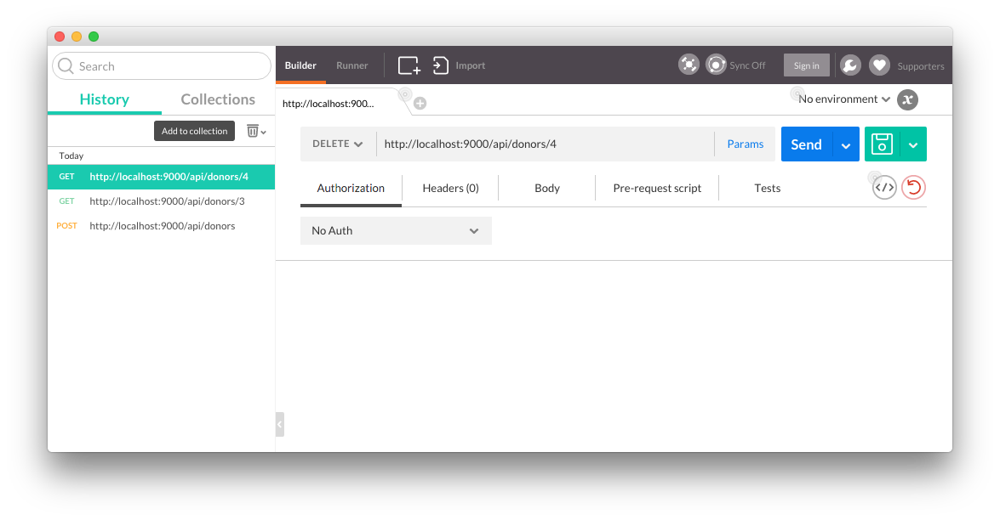
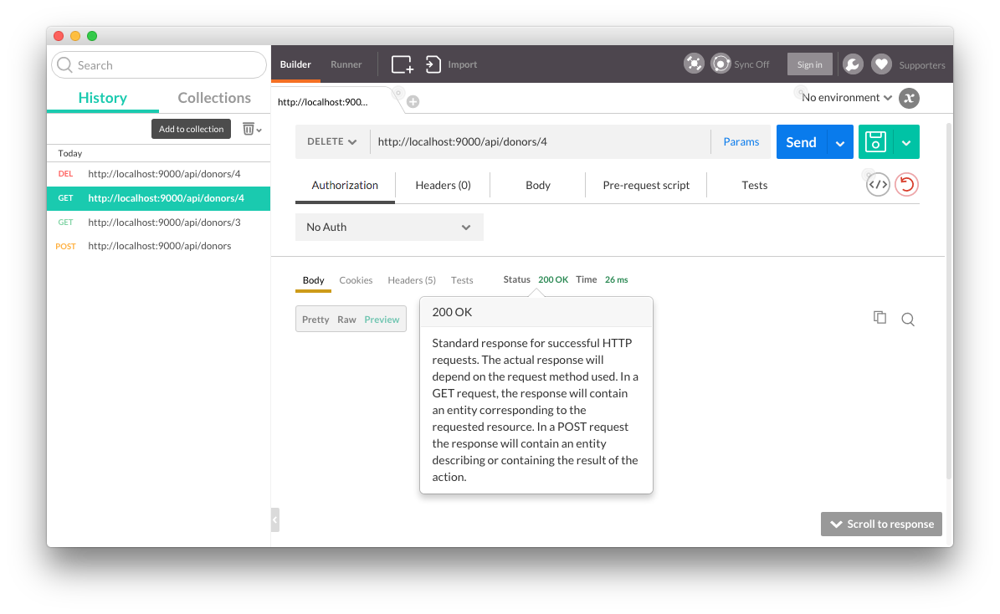
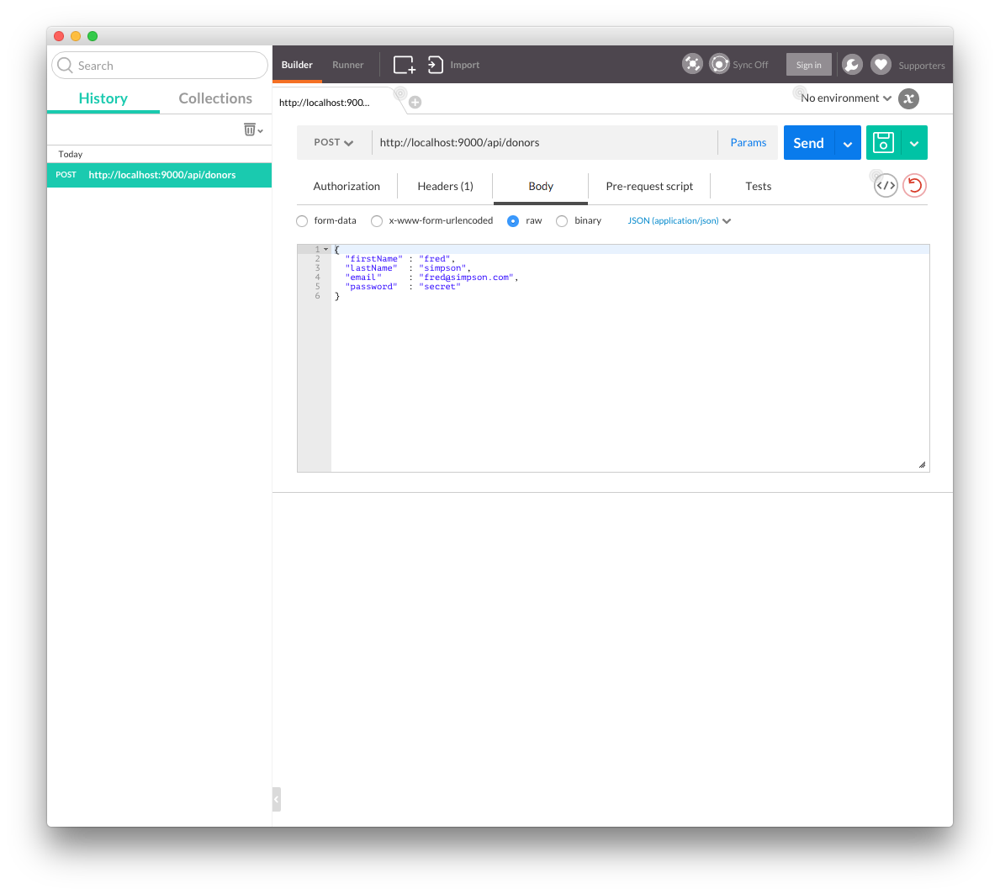
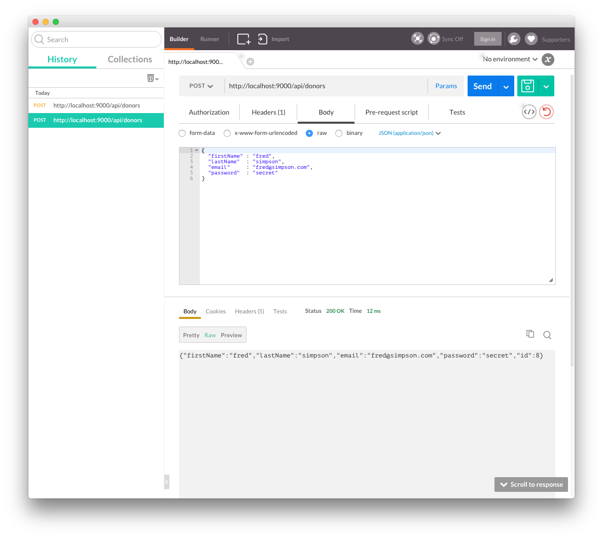
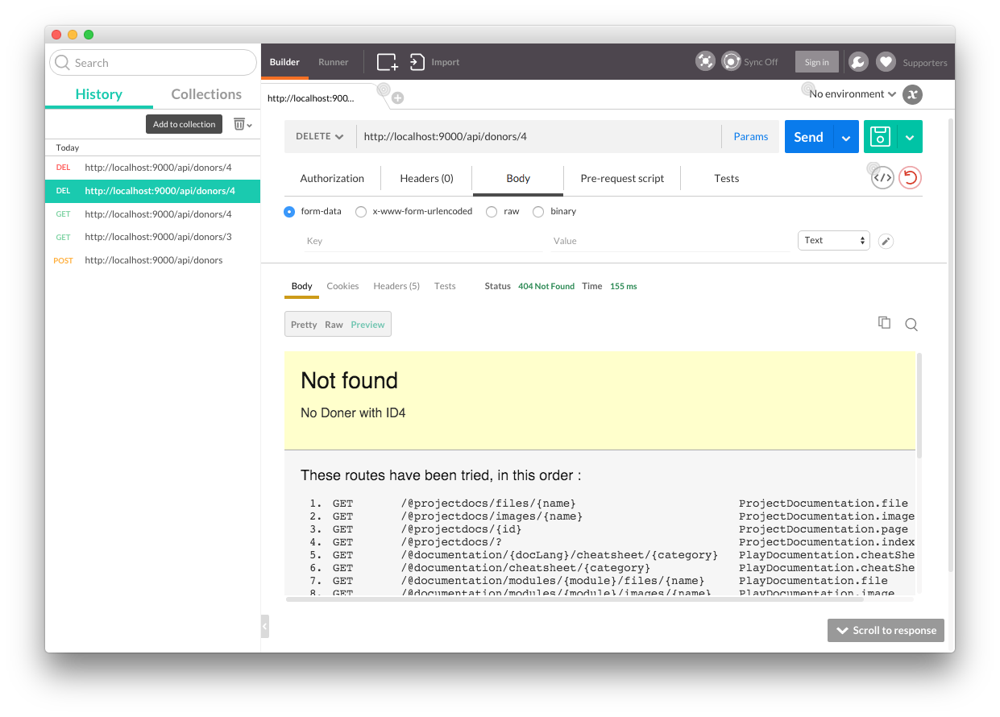
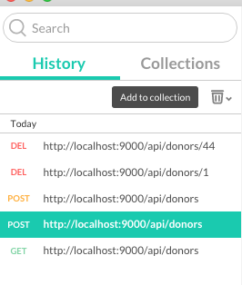

Create a version of the the donation app as a play project. Expose an 'API' from this app to enable other programmes to use it. Try to access the API from a browser, and also from a special purpose browser extension.
Before starting this lab, it might be a good idea to download a fresh version of Eclipse - without any Android tools installed - and use this version just for the apps we are about to build in this lab. Select the 'Eclipse for Java EE Developers' distribution
Using Play, create new app in the usual way:
play new donation-serviceGenerate an eclipse view of the project"
cd donation-service
play eclipsifyBefore you import this project into eclipse, create a new workspace - just for this project, ... and import the project in th usual way.
Create a new package called 'models' - and bring in these classes:
package models;
import javax.persistence.CascadeType;
import javax.persistence.Entity;
import javax.persistence.OneToMany;
import java.util.List;
import play.db.jpa.Model;
@Entity
public class Donation extends Model
{
public int amount;
public String method;
public Donation (int amount, String method)
{
this.amount = amount;
this.method = method;
}
}package models;
import javax.persistence.CascadeType;
import javax.persistence.Entity;
import javax.persistence.OneToMany;
import java.util.List;
import play.db.jpa.Model;
@Entity
public class Donor extends Model
{
public String firstName;
public String lastName;
public String email;
public String password;
public Donor(String firstName, String lastName, String email, String password)
{
this.firstName = firstName;
this.lastName = lastName;
this.email = email;
this.password = password;
}
}Create a new package called 'utils', and bring in these classes:
package utils;
import java.lang.annotation.Annotation;
import java.lang.reflect.Type;
import play.data.binding.Global;
import play.data.binding.TypeBinder;
import com.google.gson.JsonElement;
import com.google.gson.JsonParser;
@Global
public class GsonBinder implements TypeBinder<JsonElement>
{
public Object bind(String name, Annotation[] notes, String value, Class toClass, Type toType) throws Exception
{
return new JsonParser().parse(value);
}
}Into the controllers package, create a new controller called 'DonationServiceAPI':
package controllers;
import java.util.List;
import com.google.gson.Gson;
import com.google.gson.JsonElement;
import models.Donation;
import models.Donor;
import play.mvc.Controller;
public class DonationServiceAPI extends Controller
{
static Gson gson = new Gson();
public static void getAllDonors()
{
List<Donor> Donors = Donor.findAll();
renderJSON(gson.toJson(Donors));
}
public static void getDonor(Long id)
{
Donor donor = Donor.findById(id);
if (donor == null)
{
notFound();
}
else
{
renderJSON(gson.toJson(donor));
}
}
public static void createDonor(JsonElement body)
{
Donor donor = gson.fromJson(body.toString(), Donor.class);
donor.id = null;
donor.save();
renderJSON(gson.toJson(donor));
}
public static void deleteDonor(Long id)
{
Donor donor = Donor.findById(id);
if (donor == null)
{
notFound("No Doner with ID" + id);
}
else
{
donor.delete();
renderJSON(gson.toJson(donor));
}
}
public static void deleteAllDonors()
{
Donor.deleteAll();
renderText("success");
}
public static void getAllDonations()
{
List<Donation> donations = Donation.findAll();
renderJSON(gson.toJson(donations));
}
public static void getDonation (Long id)
{
Donation donation = Donation.findById(id);
renderJSON (gson.toJson(donation));
}
public static void createDonation(JsonElement body)
{
Donation donation = gson.fromJson(body.toString(), Donation.class);
Donation newDonation = new Donation (donation.amount, donation.method);
newDonation.id = null;
newDonation.save();
renderJSON (gson.toJson(newDonation));
}
public static void deleteDonation(Long id)
{
Donation donation = Donation.findById(id);
if (donation == null)
{
notFound();
}
else
{
donation.delete();
renderJSON (gson.toJson(donation));
}
}
public static void deleteAllDonations()
{
Donation.deleteAll();
renderText("success");
}
}Enable our in-memory database by uncommenting the usual setting in 'application.conf'
db.default=memIntroduce the 'Bootstrap' java class directly into the 'app' folder:
import java.util.List;
import play.jobs.*;
import play.test.*;
import models.*;
@OnApplicationStart
public class Bootstrap extends Job
{
public void doJob()
{
if (Donor.count() == 0)
{
Fixtures.deleteDatabase();
Fixtures.loadModels("data.yml");
}
}
}.. and now specify assitional routes in config/routes:
GET /api/donors DonationServiceAPI.getAllDonors
GET /api/donors/{id} DonationServiceAPI.getDonor
POST /api/donors DonationServiceAPI.createDonor
DELETE /api/donors/{id} DonationServiceAPI.deleteDonor
DELETE /api/donors DonationServiceAPI.deleteAllDonors
GET /api/donations DonationServiceAPI.getAllDonations
GET /api/donations/{id} DonationServiceAPI.getDonation
POST /api/donations DonationServiceAPI.createDonation
DELETE /api/donations/{id} DonationServiceAPI.deleteDonation
DELETE /api/donations DonationServiceAPI.deleteAllDonationsFinally, provide some initial database entries in conf/data.yml:
Donation(a):
amount : 210
method : paypal
Donation(b):
amount : 20
method : cash
Donation(c):
amount : 330
method : cash
Donation(d):
amount : 10
method : paypal
Donor(homer):
usaCitizen: true
firstName: Homer
lastName: Simpson
email: homer@simpson.com
password: secret
Donor(marge):
usaCitizen: true
firstName: Marge
lastName: Simpson
email: marge@simpson.com
password: secret
Donor(lisa):
usaCitizen: true
firstName: Lisa
lastName: Simpson
email: lisa@simpson.com
password: secret
Donor(bart):
usaCitizen: true
firstName: Bart
lastName: Simpson
email: bart@simpson.com
password: secret
Donor(maggie):
usaCitizen: true
firstName: Maggie
lastName: Simpson
email: maggie@simpson.com
password: secretThe project should build without error. Launch it and browse to the database in the usual way.
Also, in a browser, explore these urls:
You should see listed the test data loaded from the yml file.
There are various tools for exploring APIs such as this. Visit this site here:
Follow the instructions to download an install the Postman Chrome application. When you launch the app, you should see something like this:

Entering one of the URLs above, you should see the response formatted as follows:

Try a few other urls from the above list. Also, try a few unrecognised urls - and explore the raw and preview display options.
So far you have experimented with GET commands. THe API we have developed also supports POST and DELETE. This are already declared in the routes file:
GET /api/donors DonationServiceAPI.getAllDonors
GET /api/donors/{id} DonationServiceAPI.getDonor
POST /api/donors DonationServiceAPI.createDonor
DELETE /api/donors/{id} DonationServiceAPI.deleteDonor
GET /api/donations DonationServiceAPI.getAllDonations
GET /api/donations/{id} DonationServiceAPI.getDonation
POST /api/donations DonationServiceAPI.createDonation
DELETE /api/donations/{id} DonationServiceAPI.deleteDonationPOST will create a user or donation, and DELETE will remove one.
POST and DELETE cannot be easily generated from a standard browser address bar (GET is the default). However this is where tools like Postman come into their own.
Here is a JSON version of a new User not currently in the database:
{
"firstName" : "fred",
"lastName" : "simpson",
"email" : "fred@simpson.com",
"password" : "secret"
}In Postman, enter this url:
and switch the HTTP request from GET to POST, and paste the above json into the 'raw' text box, selecting 'JSON' as the style.

In addition, notice we have sellected 'application/json' in the dropdown panel on the right.
Press Send - and the application should respond with a copy of the object it has just created:

Also, check via a standard browser that the new object is being returned when we do a standard get from a browser address bar:
Now try a delete (press Reset first:
This time we have no parameters, just the ID of the user we want to delete. If it works (and a user with ID 4 exists), then we should get a 'success' response:
Verify, via a GET, that this user is in fact deleted.
Try deleting an donor that does not exist:

Notice the response is "Not Found"
Relate this to the DonationControllAPI method that will have been asked to service this request.
Archive of project so far:
You may notice that Postman remembers the various request you will have made:

You should be able to rerun each of them - or edit them to reflect different json objects.
Build some requests to create, delete and list Donations as well as Users.
Explore the 'Collections' feature of Postman. This will enable you to archive and recover various requests - which can be useful for test purposes.
Se if you can figure out how to run the play application in debug mode. Place a breakpoint in one of the api calls. see if you can follow the logic associated with recovering or returning the user and Donation objects.